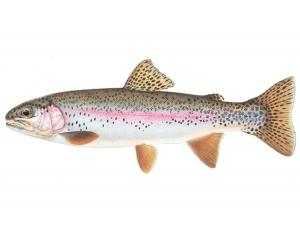

red braised fish
gary resisting the urge to flip the fish
surprisingly sugary
- some kind of trout or similar
- Potato starch/cornstarch/wheat starch

- chinkiang vinegar

- light soy

- dark soy

- Tbsp garlic, finely chopped
- 3-4 stalks of spring onions, finely chopped
- Tbsp ginger, finely chopped
- sugar
- salt
- splash water
- coat the fish lightly on both sides with the starch, but dust off so it's a light coating.
- Heat a 3 tablespoons of oil on medium heat in a skillet with a couple thick slices of ginger until ginger is browned and oil is gingery.
- Remove ginger, add fish. Do not move the fish now!!! *the starchy fish will crisp on one side without sticking in 5min, if you move it before it's finished crisping, the wet fish and delicate skin and loose starch will make a sticky mess and a broken fish. After 5min of good frying under moderate-high heat (adjust as necessary if it looks like it's burning or insipid).
- Flip the fish over with a gentle spatula move, the skin should come off the pan relatively easily, not sticking. Allow the other side to fry, too, but you can add the spring onions and garlic now. Add a little more oil if the pan looks dry.
- After both sides have had 5min frying, add a glug of light soy, a splash of dark soy, a big glug of vinegar and enough water (e.g. 60ml) so that the fish is simmering with half an inch of liquid, not just burning off all the soy etc.
- add 3 generous tbsp of sugar to dissolve in the vinegar, and keep spooning sauce over the fried fish. The idea is to get a sticky sweet and sour reduction all over the fish. After 5min, once the simmering bubbles turn visibly viscous, and before the sugar actually starts to burn, turn off the heat.
- move fish onto plate and pour dark shiny somewhat sticky sauce all over it. Serve with rice and maybe garnish with chopped coriander.